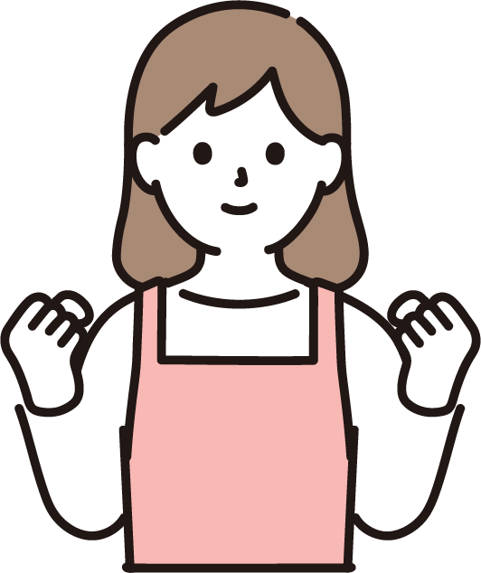
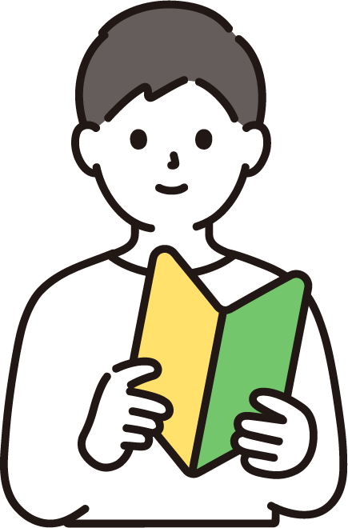

E.Sは三日坊主さん専門の
パーソナルジムです。
運動が続かないのは、
「とにかく頑張らないと成果が出ない」
という思い込みこそが、一番の原因です。
E.Sでは、個人の体力だけでなく
性格や生活リズムに合わせた
プログラムを作成します。
"頑張って続ける"のではなく
"気づいたら続いている"状態をつくります。
運動経験がなくても、続ける自信がなくても大丈夫です。
そんな方でも、1年以上続けられている人がE.Sにはたくさんいます。
「三日坊主さんこそ大歓迎」
——それがE.Sの特徴です。
無料体験に申し込むサービス
パーソナルトレーニング

料金（1回/50分）
| 月2回 | ￥9,900（税込￥10,890） |
| 月4回 | ￥19,800（税込￥21,780） |
| 月8回 | ￥37,800（税込￥41,580） |
※入会金￥20,000(税込￥22,000)
オンラインパーソナル

料金（1回/25分）
| 月2回 | ￥4,950（税込￥5,445） |
| 月4回 | ￥9,900（税込￥10,890） |
| 月8回 | ￥19,800（税込￥21,780） |
※入会金￥10,000(税込￥11,000)
E.Sがおススメな方
①運動が三日坊主になってしまう人
続かない人のためのプログラム設計
プログラムは1人1人の性格やライフスタイルも考慮。三日坊主の人でも続けられるプログラムをご用意
②キツいことやツラいことが苦手な人
嫌いなトレーニングは拒否OK
嫌なメニューやツラい筋トレはやりたい人だけでOK。運動の心地良さを感じることが、楽しく長く続けるコツです。
③1人だと続けられる自信がない人
続かない前提でOK
実はE.Sのトレーナーも「続けるのが得意じゃない側」。続けられない人の気持ちを誰よりも理解しています。
ジムについて
ジムは豪華な設備や駅近の立地ではありませんが、本当に必要なサービスだけを提供することで、続けやすい料金を実現しています。また、オンラインパーソナルにも対応しており、ご自宅からセッションを受けることも可能です。
ブログ
会員様の声

「半年間で－12㎏達成‼」
今までジム通いが続かなかった私でもオンラインならできました！大好きなお酒を辞めずに取り組める方法だったので、気持ち的にも楽に進めることができました。
-50代 女性 会員様

「こんなに運動が続いたのは初めてです！」
トレーニング後は、体も軽く動きやすくなり、日々の生活もとても元気に過ごせます。今では運動は生活の必須項目だと思えるようになりました。
-40代 女性 会員様

「始めて2ヶ月、続いています」
体力やその日のコンディションによって種目や負荷を調整してもらえるので心配はいりませんでした。時間も50分と長いイメージでしたがアッという間に終わってしまいます。
-50代 男性 会員様
トレーナー紹介

斉藤 弘樹
(NSCA認定パーソナルトレーナー)
運動が苦手、続けられない――そんな気持ちに寄り添えるサポートを大切にしています。
実は私自身も、継続が苦手で、何度も挫折を経験しています。
だからこそ、「続けることの難しさ」がよくわかります。続けられることにこだわったトレーニング環境で、無理のない習慣化を一緒に目指していきましょう。